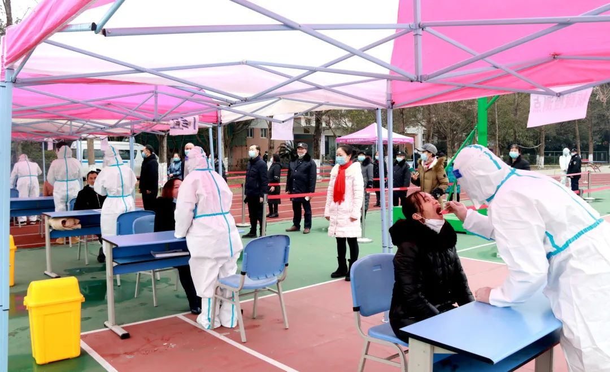
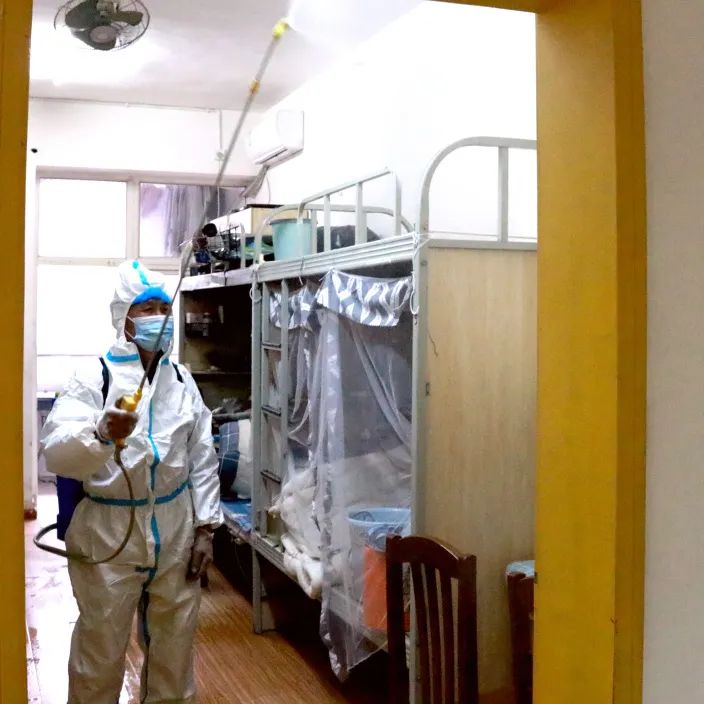

| 防疫分型 |
防疫指南 |
防疫照片 |
| 出行防疫 |
加强个人防护。提高常态化下疫情防控个人防护意识，做好个人防护。出入公共场所及密闭空间、重点场所要坚持科学正确佩戴口罩，与他人保持安全社交距离，并配合做好体温检测、“健康码”查验通行。 |
 |
| 在校防疫 |
不传谣、不信谣。当网络上有疫情的消息时，大学生要明辨是非、辨别真伪，相信国家官方发布的消息，不要道听途说。 不聚众、不聚集。人多的时候，疫情最容易传播，大学生要养成自觉的习惯，不往人多的地方挤，不聚众、不聚集。 |
 |
| 寝室防疫 |
勤洗手。病毒有接触性地传染的风险，手是我们暴露在外，无遗会经常会直接接触一些事物，所以为了安全起见，我们在接触了一些外界的东西的时候，一定要记得洗手。 不扎堆。为了同学的健康和安全，在疫情期间同学之间要保持一定的安全距离，不要让病毒有机可趁。戴口罩测体温。在病毒传播比较严重的城镇学生最好戴口罩上课，这样可以防止如果有老师或同学被病毒感染在不自知的情况下在学校蔓延。而且第天测体温有助于了解学生的身体状况，有了情况可以及时应对。 |
 |
| 居家防疫 |
1、外出鞋应放在室外，如放置室内，则需定期以酒精等擦拭鞋柜收纳区域进行消毒。 2、脱下外套后，不方便立马洗涤时，则要悬挂在衣帽间或进门处进行隔离放置，并定期进行消毒擦拭，切勿穿着外套在家走动。 3、用肥皂或洗手液仔细地洗手，顺便洗脸以防脸上残留细菌。餐具、玩具、毛巾等棉布类： 用煮沸的水漫过所煮物品进行水煮消毒，15~20分钟即可，沸水能使细菌的蛋白质凝固变性。 不适宜高温煮沸的物品： 用0.5%过氧乙酸浸泡30~60分钟，或者用含有效氯500mg/L的清洗剂浸泡5~10分钟，浸泡后用清水冲洗干净即可。 |
|